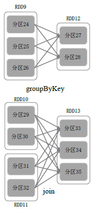

Spark: an unified analytics engine for large-scale data processing
Spark VS MapReduce
- MapReduce implementation principles
- 对于一个MapReduce作业来说，大致操作为：
- 可以发现，其主要的改变就是文件内容的变化
- 中间结果需要写磁盘，开销非常大
Hadoop MapReduce局限性
- 表达能力有限
- 仅map和reduce函数，无法直接用join等操作
- 磁盘IO开销大（单个job）
- 输入、输出及shuffle中间结果（可以优化）都需要读写磁盘
- 延迟高（多个job）
- 有依赖关系：job之间的衔接涉及IO开销，每次结果需要写入HDFS，在将其从HDFS中读出
- 无依赖关系：在前一个job执行完成之前，其他job依然无法开始（不利于并行）
- 有依赖关系：job之间的衔接涉及IO开销，每次结果需要写入HDFS，在将其从HDFS中读出
Spark改进
- 表达能力有限
- 增加join等更多复杂的函数，可以串联为DAG（有向无环图）
- 磁盘IO开销大（单个job）
- 非shuffle阶段避免中间结果写磁盘
- 中间结果写磁盘
- MapReduce将Map的写入磁盘
- Spark优先使用内存（但也不能保证不用磁盘）
- 延迟高（多个job作为一整个job）
- 将原来的多个job作为一个job的多个阶段
- 有依赖关系：各个阶段之间的衔接尽量写内存
- 无依赖关系：多个阶段可以同时执行
特点
- 运行速度快
- 使用DAG执行引擎以支持循环数据流与内存计算
- 容易使用
- 支持使用Scala、Java、Python和R语言进行编程，可以通过Spark Shell进行交互式编程
- Spark Shell可以直接命令行就可以运行
- 通用性
- Spark提供了完整而强大的技术栈，包括SQL查询、流式计算、机器学习和图算法组件
- 运行模式多样
- 可运行于独立的集群模式中，可运行于Hadoop中，也可运行于Amazon EC2等云环境中，并且可以访问HDFS、Cassandra、HBase、Hive等多种数据源
- 如何做到查询之前将数据拿到内存：
- 对于MapReduce，输入和输出都是文件
- 对于Spark，需要对文件再包装
- 告诉系统文件已经在内存中
- cache了多少
RDD抽象
概念
RDD
- Resilient Distributed Dataset（弹性分布式数据集）
- 这里的弹性主要是指
容错 - Resilient：具有可恢复的容错特性
- Distributed：每个RDD可分成多个分区，一个RDD的不同分区可以存到集群中不同的节点上
- Dataset：每个分区就是一个数据集片段
- 这里的弹性主要是指
- 分布式内存的一个抽象概念，提供了一种高度受限的共享内存模型
- 区别于hadoop核心的东西
- 作为分布式系统，RDD必须要分布
- 创建RDD的过程就是将普通文件增加元信息
RDD特性
- RDD只读(Immutable)（为什么不是Readonly?）
- 本质上一个只读的对象集合
- 很重要，不能修改
- 文件R1->R2，是新建了一个R2
- 只能基于稳定的物理存储中的数据集创建RDD
- 通过在其他RDD上执行确定的转换操作（如map、join group by）而得到新的RDD
- RDD支持运算操作
RDD运算操作
- 转换Transformation：描述RDD的转换逻辑
- group by
- 动作Action：标志转换结束，触发DAG生成
- 惰性求值：只有遇到action操作时，才会真正计算。
DAG
- DAG：是Directed Acyclic Graph（有向无环图）的简称
- 反映RDD之间的依赖关系
RDD Lineage
- RDD Lineage，即DAG拓扑结构
- RDD读入外部数据源进行创建
- RDD经过一系列的
转换（Transformation）操作，每一次都会产生不同的RDD，供给下一个转换操作使用 - 最后一个RDD经过
action操作进行转换，并输出到外部数据源
- Spark系统保留RDD Lineage的信息
- 用于容错和恢复
RDD依赖关系
- `RDD分区
- 一个RDD可以在不同节点
- 若已经对key值进行了
hash partitionjoin操作一一对应
窄依赖
- 表现为一个父
RDD的分区对应于一个子RDD的分区 - 或多个父
RDD的分区对应于一个子RDD的分区
宽依赖
- 表现为存在一个父
RDD的一个分区对应一个子RDD的多个分区 - 
区别
- 窄依赖只需要恢复某一个分区
- 宽依赖需要所有分区
为什么关系依赖关系
- 分析各个
RDD的偏序关系生成DAG，再通过分析各个RDD中的分区之间的依赖关系来决定如何划分Stage - 具体划分方法
- 在DAG中进行反向解析，遇到宽依赖就断开
- 为什么反向解析
- 因为action只有一个，更加方便
- 为什么反向解析
- 遇到窄依赖就把当前的RDD加入到Stage中
- 将窄依赖尽量划分在同一个Stage中，可以实现流水线计算pipeline
- 窄依赖之间可以并行执行
- 窄依赖的不同分区可以用pipeline，不用等待，直接执行
- 在DAG中进行反向解析，遇到宽依赖就断开
- 例子

- 如图被分成三个Stage，在Stage2中，从map到union都是窄依赖，这两步操作可以形成一个流水线操作
stage类型
ShuffleMapStage
- 输入/输出
- 输入边界可以是从外部获取数据，也可以是另一个
ShuffleMapStage的输出
- 输入边界可以是从外部获取数据，也可以是另一个
- 以Shuffle为输出边界，作为另一个Stage开始
- 特点
- 不是最终的Stage，在它之后还有其他Stage
- 它的输出一定需要经过Shuffle过程，并作为后续Stage的输入
- 在一个Job里可能有该类型的Stage，也可能没有该类型Stage
- 如果没有，其实就没太大意义
ResultStage
- 输入/输出
- 其输入边界可以是从外部获取数据，也可以是另一个
ShuffleMapStage的输出
- 其输入边界可以是从外部获取数据，也可以是另一个
- 输出直接产生结果或存储
- 特点
- 在一个Job里必定有该类型Stage
- 最终的Stage
- 一个DAG含有一个或多个Stage，其中至少含有一个ResultStage
体系结构
Spark架构设计
- Master：管理整个系统
- 集群资源管理器（Cluster Manager）
- 资源管理器可以自带或Mesos或YARN（可以使用其他的资源管理器，与计算框架分离）
- Worker：运行作业的工作节点
- 负责任务执行的进程(Executor）
- 负责任务执行的线程(Task)
层次结构
- Application
- 用户编写的Spark应用程序
- Job
- 一个Job包含多个RDD及作用于相应RDD上的各种操作
- Stage
- 一个Job会分为多组Task，每组Task被称为Stage，或者也被称为TaskSet
- Job的基本调度单位
- 代表了一组关联的、相互之间没有Shuffle依赖关系的任务组成的任务集
- Task
- 运行在Executor上的工作单元
概念
逻辑执行角度
- 一个Application=一个或多个DAG
- 一个DAG=一个或多个Stage
- 一个Stage=若干窄依赖的RDD转换
物理执行角度
- 一个Application=一个或多个Job
- 一个Job=一个或多个TaskSet
- 一个TaskSet=多个没有Shuffle关系的Task
工作流程
执行Application的一般过程
- Driver向集群管理器申请资源
- 集群管理器启动Executor
- Driver向Executor发送应用程序代码和文件
- Executor上执行Task，运行结束后，执行结果会返回给Driver，或写到HDFS等
Spark运行流程特点
- Application有专属的Executor进程，并且该进程在Application运行期间一直驻留
- Executor进程以多线程的方式运行Task
- Spark运行过程与资源管理器无关，只要能够获取Executor进程并保持通信即可
- Task采用了
数据本地性和推测执行等优化机制推测执行将较慢的任务再次在其它节点启动- 与Hadoop一样，计算向数据靠拢
- 认为分配的Task是均匀的，若出现一个节点特别慢，则在另外的节点上重新计算
DAG运行过程
RDD在Spark架构中的运行过程：
- 创建RDD对象；
- SparkContext负责计算RDD之间的依赖关系，构建DAG；
- DAGScheduler负责把DAG图分解成多个Stage，每个Stage中包含了多个Task，每个Task会被TaskScheduler分发给各个WorkerNode上的Executor去执行
Spark Executor
与MapReduce相比，Spark所采用的Executor有两个优点：
- 利用多线程来执行具体的任务，减少任务的启动开销
- Executor中有一个BlockManager存储模块，会将内存和磁盘共同作为存储设备，有效减少IO开销
容错机制
Master故障
几乎没有办法
Worker故障
Lineage机制
RDD容错机制：血缘关系（Lineage）、重新计算丢失分区、无需回滚系统、重算过程在不同节点之间并行、只记录粗粒度的操作
根据依赖关系重新计算上一分区：
- 窄依赖(narrow dependency)
- 执行某个partition时，检查父亲RDD对应的partition是否存在
- 存在，即可执行当前RDD对应的操作
- 不存在，则重构父亲RDD对应的partition
- 执行某个partition时，检查父亲RDD对应的partition是否存在
- 宽依赖(widedependency)
- 执行某个partition时，检查父亲RDD对应的partition是否存在
- 存在，即可执行当前RDD对应的操作
- 不存在，则重构整个父亲RDD
- 执行某个partition时，检查父亲RDD对应的partition是否存在
例子
- HadoopRDD
- 分区：对应于HDFS输入文件的文件块
- 依赖：无依赖
- 函数：读取每个文件块
- 最佳位置：HDFS的文件块对应的位置
- 分区策略：无
- FilteredRDD
- 分区：与父亲RDD一致
- 依赖：与父亲RDD存在窄依赖
- 函数：计算父亲的每个分区并执行用户提供的过滤函数
- 最佳位置：无，与父亲RDD一致
- 分区策略：无
- JoinedRDD
- 分区：每个reduce任务（个数可指定）对应一个分区
- 依赖：常常与所有父亲RDD存在宽依赖
- 函数：计算shuffle数据，并且执行join操作
- 最佳位置：无
- 分区策略：HashPartitioner
RDD存储机制
- RDD提供的持久化（缓存）接口
- persist()：对一个RDD标记为持久化
- 接受StorageLevel类型参数，可配置各种级别
- 持久化后的RDD将会被保留在计算节点的中被后面的行动操作重复使用
- cache()
- 相当于persist(MEMORY_ONLY)
- 可以使用unpersist()方法手动地把持久化的RDD从缓存中移除
- persist()：对一个RDD标记为持久化
- 没有标记持久化的RDD会被回收，节约内存
检查点机制
- 前述机制的不足之处
- Lineage可能非常长
- RDD存储机制主要面向本地磁盘的存储
- 检查点机制将RDD写入可靠的外部分布式文件系统，例如HDFS
- 在实现层面，写检查点的过程是一个独立job，作为后台作业运行